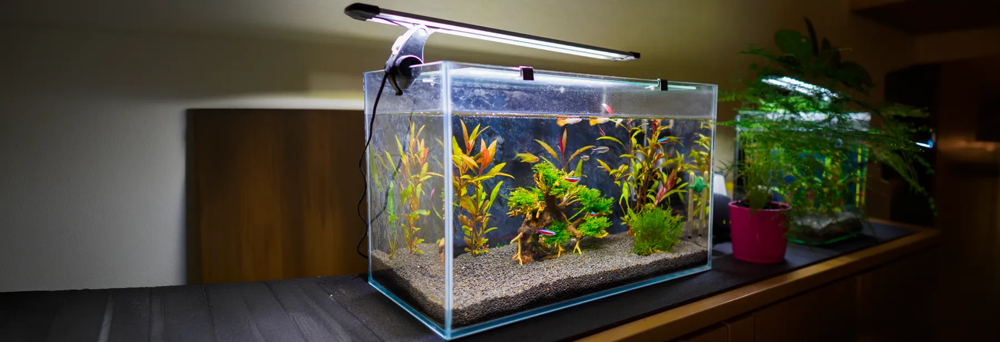
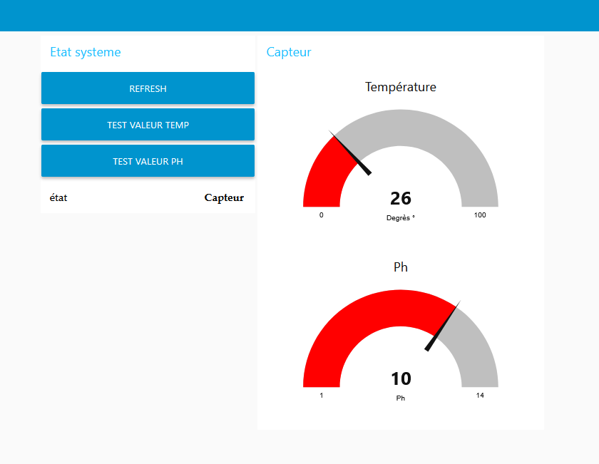

Supervision de la qualité de l'eau d'un bassin ornemental

Vue du bassin ornemental faisant l'objet de la supervision.
Contexte du projet
Dans le cadre de l'épreuve E6 du BTS CIEL (Option IR), ce projet vise à automatiser la surveillance de la biodiversité d'un bassin sans traitement chimique. L'objectif est de remplacer les tests chimiques manuels par une solution de supervision connectée via une Raspberry Pi.
Mes Missions : Équipe Web - Rôle E2 (Back-office & Back-end)
Au sein de l'équipe Web, je suis responsable de la persistance des données et de l'intelligence métier du système.

Interface de supervision et tableau de bord en quasi-temps-réel.
Réalisations techniques :
- Développement Back-end : Utilisation d'un langage orienté objet couplé à un Système de Gestion de Bases de Données (SGBD) pour assurer la persistance des mesures de capteurs (température, pH, oxygène).
- API & Back-office : Implantation de la partie configuration via Python (Django) ou PHP pour permettre au superviseur de définir les seuils critiques (température, pH, taux d'oxygène).
- Système d'Alerte : Mise en place d'un service d'alerte par courriel pour prévenir en cas de variation brutale des paramètres de l'eau.
- Gestion des Paramètres : Développement des fonctionnalités permettant de sauvegarder, consulter et restaurer les précédents paramétrages du système.
Technologies utilisées :
| Domaine | Technologie |
|---|---|
| Langage principal | Python 3.13 / PHP 8.4 |
| Framework Web | Django |
| Infrastructure | Raspberry Pi 5 sous OS Bookworm |
| Communication | API REST / MQTT 5.0 |